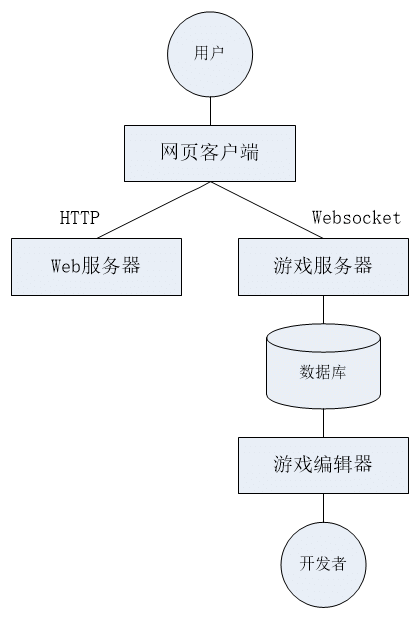
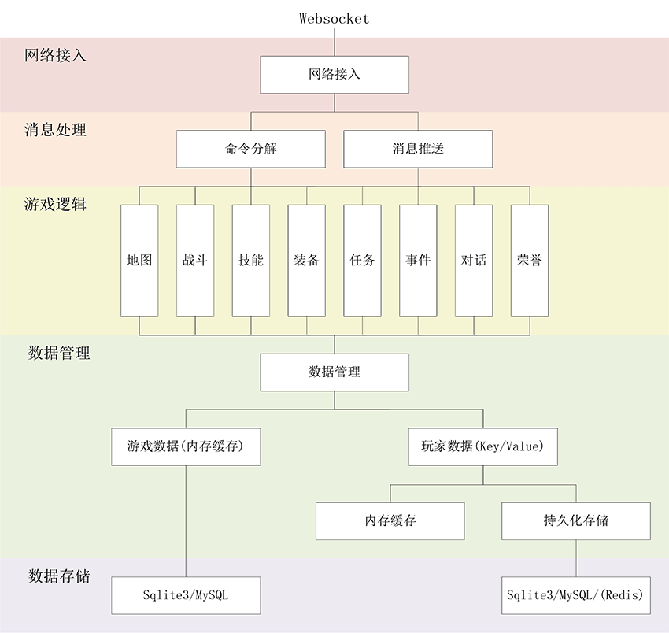

5. 系统架构¶
5.1. 整体结构¶
Muddery系统是一个开源的网络游戏框架，整个系统可分为三个部分：游戏服务器、网络客户端和游戏编辑器。
游戏服务器使用 Python 编写，为游戏提供后台服务，处理游戏逻辑和数据存储，对外提供API接口供客户端调用。
网络客户端使用 HTML/JavaScript 编写，游戏前后端分离，前端可以部署在任意的Web服务器上，系统也自带了一个简单的Web服务器。游戏客户端可以用浏览器打开，方便用户访问游戏。开发者也可以开发自己的客户端，只要遵守服务端的接口规则，都可以和游戏服务器对接。
游戏编辑器使用 Python 和 HTML/Javascript 编写，提供网页编辑界面，方便游戏开发者制作游戏，减少对游戏代码的编辑和修改，游戏数据可以打包导入、导出，可以直接提供给游戏服务器使用，方便游戏部署。
服务器的关系见下图
5.2. 游戏服务器¶
游戏服务器是系统的核心，它负责管理用户连接、处理游戏逻辑、保存游戏运行状态等。
服务器只负责处理游戏逻辑、保存游戏数据，不负责客户端的显示，服务器对外全部使用json格式传输信息。客户端会将玩家的操作格式化为一个json格式的字符串发送到服务器。服务器再将json格式的字符串解析成为操作命令，按游戏逻辑进行处理，然后再以json格式将处理结果返回给客户端。其他需要传递到客户端的数据也都是json格式的。客户端收到json格式的数据后，可以按自己的方式对数据进行解析处理。
游戏服务器的结构可以分为5层：网络接入、消息处理、游戏逻辑、数据管理、数据存储，详见下图：
网络接入
游戏服务器使用Websocket协议进行通讯，使用Sanic作为网络服务框架，对外提供网络接口，负责接受客户端发来的命令，并将服务器的消息推送给客户端。
消息处理
网络接入层收到的命令会交给游戏服务器，服务器解析命令后会按照相应的逻辑进行处理。服务器发送给客户端的消息也通过消息处理层发送给客户端。
游戏逻辑
游戏逻辑层是游戏服务器的核心功能，角色行为、对话、事件触发、任务完成等功能都在此处理。处理的结果会反馈给相关的客户端。
数据管理
游戏数据可以分为两类：构建游戏世界的数据以及游戏中玩家的相关数据。游戏服务器运行时游戏世界的数据是不会变的，运行时加载到内存中以加快访问速度。玩家的数据以Key/Value的形式存储，使用内存缓存。
数据存储
游戏数据可以选用多种存储方式，目前支持Sqlite3和MySQL，以后会增加支持Redis、Oracle等。Sqlite3仅可用于开发、测试使用，正式运行请使用MySQL。游戏世界的数据仅在服务器启动时加载到内存中，之后不再读取。玩家的数据会实时保存到数据库中。
5.3. 游戏客户端¶
Muddery 提供了一个 HTML/JavaScript 编写的网页客户端，可以在网页浏览器上独立运行。页面完全由静态文件组成，通过 Websocket 和服务器通讯。客户端的页面文件可以放在任何一个静态网页服务器上，也可以打包成本地文件，以独立App的形式提供给玩家。
客户端的可以将用户的操作，比如点击某个按钮的动作，组织成服务端可以识别的命令，以json格式的字符串发送到服务端。服务端发给客户端的数据也需要经过客户端的解析才能展示，比如地图、背包、任务、战斗等，服务端只发送数据，展示出来的形式完全由客户端决定。因此展示的形式可以是多种多样的，可以有文字、表格、图片等。
用户也可以自己创建一个客户端，使用规定的协议和服务端交互信息，在前端用自己想要的形式展示游戏内容。
5.4. 游戏编辑器¶
Muddery 提供了一套网页版的游戏编辑器，游戏制作人员可以在网页版的编辑器上直接修改游戏的内容，也可以使用Excel或文本编辑器直接修改游戏数据。
Muddery系统的游戏数据存放在一张张数据表中，所有的房间、物品、NPC、对话、任务都由一张或几张表格构成。编辑这些表格然后将表格中的数据提交到服务器，就可以完成对游戏内容的更新。用户还可以从服务器导出游戏内容，放到表格文件或打包成zip文件中。这样可以很方便地将游戏内容部署到多个服务器上，便于多个服务器的管理。